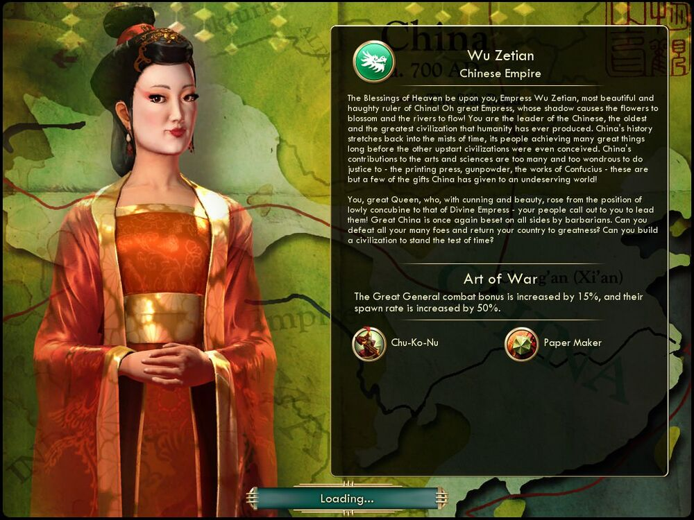

측천무후 Wu Zetian중국 China |
|  |
| 가장 아름답고 도도한 중국의 통치자인 측천무후여, 그대의 그림자에 꽃이 피어나고 강이 흐릅니다. 하늘의 축복이 그대와 함께하기를! 그대는 인류 역사상 가장 유구하고 위대한 문명인 중국의 지도자입니다. 중국의 역사는 까마득한 옛날로 거슬러 올라갑니다. 다른 문명이 미처 생겨나기도 전에 중국인은 이미 많은 업적을 이루었고, 예술적, 과학적 위업은 그 수가 너무 많아 이루 말할 수가 없습니다. 인쇄기, 화약, 유교 사상은 중국이 미개한 세상에 선사한 선물 중 극히 일부일 뿐입니다!
그 지략과 아름다움으로 미천한 첩의 지위를 벗어던지고 신성한 통치자로 등극한 위대한 여제여, 중국을 이끌어주기를 바라는 백성의 목소리가 들리십니까? 위대한 중국은 또 다시 야만인에 포위당했습니다. 적들을 꺾고 중국의 영광을 되찾으며, 세월의 시련을 이겨낼 문명을 건설해 주시겠습니까? |